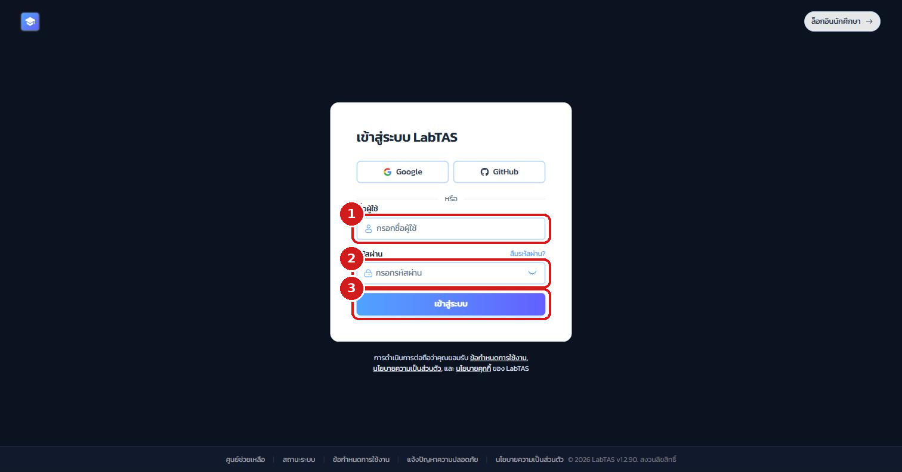
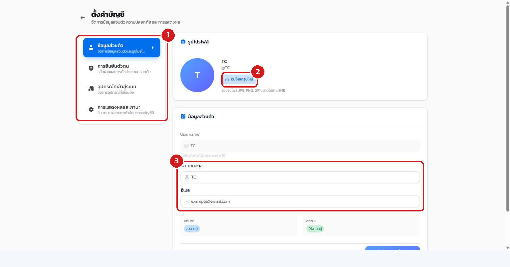
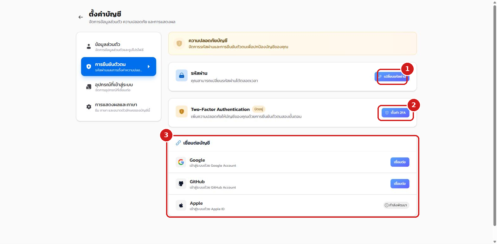
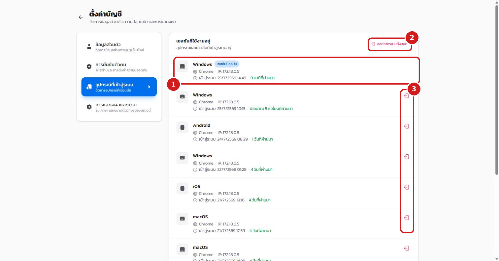
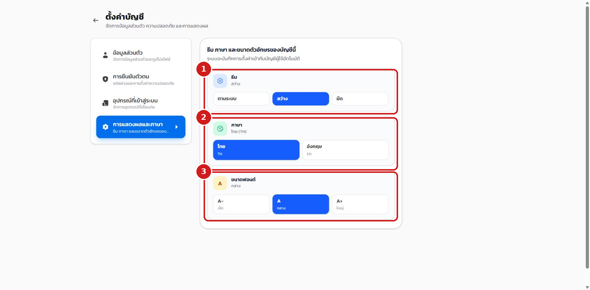
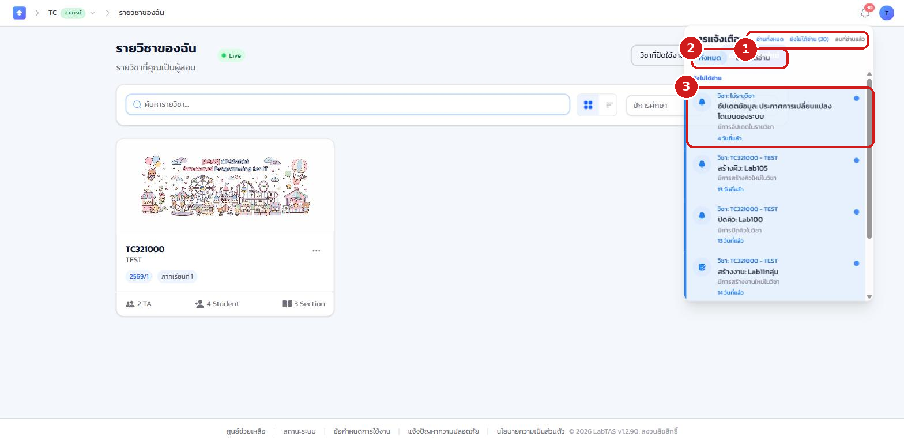
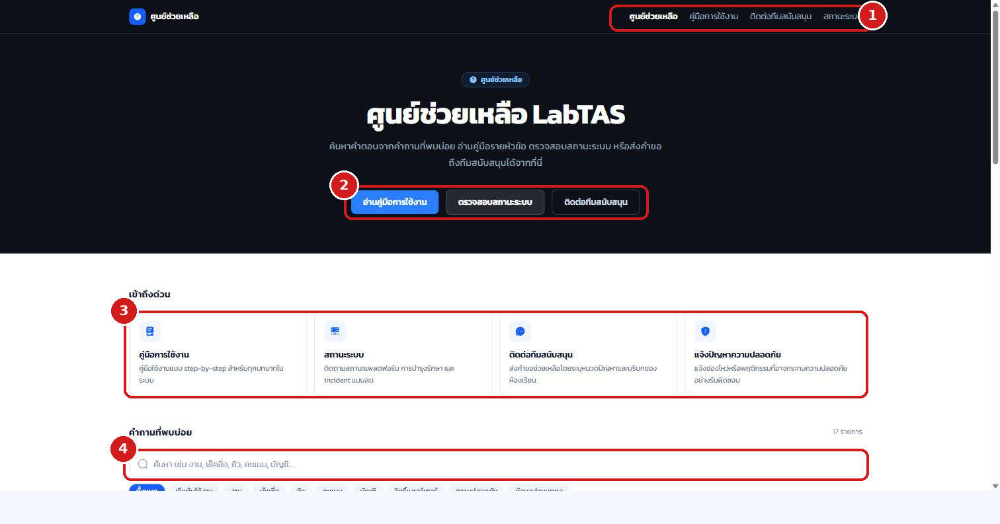

เนื้อหาบทนี้ใช้ได้กับผู้ดูแลระบบ อาจารย์ และผู้ช่วยสอนทุกคน เนื่องจากหน้าตั้งค่าบัญชีเป็นหน้าเดียวกันทุกบทบาท
2.1 การเข้าสู่ระบบ#
- เปิดเว็บเบราว์เซอร์ไปที่ที่อยู่เว็บของระบบ ระบบจะแสดงหน้าเข้าสู่ระบบ
- กรอก ชื่อผู้ใช้ ในช่องแรก
- กรอก รหัสผ่าน ในช่องถัดมา
- คลิกปุ่ม เข้าสู่ระบบ หรือเลือกเข้าสู่ระบบผ่านบัญชี Google / GitHub ที่ผูกไว้ (นักศึกษาใช้ปุ่ม "ล็อกอินนักศึกษา" ที่มุมขวาบน)

ผู้ใช้ที่ผู้ดูแลระบบสร้างให้ใหม่จะได้รับรหัสผ่านชั่วคราว เมื่อเข้าสู่ระบบครั้งแรกระบบจะบังคับให้เปลี่ยนรหัสผ่านก่อนใช้งาน และหากลืมรหัสผ่านสามารถกด "ลืมรหัสผ่าน?" เพื่อรับลิงก์รีเซ็ตทางอีเมลได้
2.2 ข้อมูลส่วนตัวและรูปโปรไฟล์#
เข้าหน้าตั้งค่าบัญชีโดยคลิกรูปโปรไฟล์ที่มุมขวาบน แล้วเลือก ตั้งค่าโปรไฟล์
- เมนูด้านซ้ายแบ่งเป็น 4 ส่วน ได้แก่ ข้อมูลส่วนตัว การยืนยันตัวตน อุปกรณ์ที่เข้าสู่ระบบ และการแสดงผลและภาษา
- ปุ่ม อัปโหลดรูปใหม่ ใช้เปลี่ยนรูปโปรไฟล์ (JPG/PNG/GIF ไม่เกิน 5MB)
- แก้ไข ชื่อ-นามสกุลและอีเมล แล้วกดบันทึกการเปลี่ยนแปลง (ชื่อผู้ใช้ Username แก้ไขไม่ได้)

2.3 รหัสผ่าน การยืนยันตัวตนสองชั้น และการเชื่อมบัญชี#
ที่เมนู การยืนยันตัวตน
- ปุ่ม เปลี่ยนรหัสผ่าน ใช้เปลี่ยนรหัสผ่านของบัญชี
- ปุ่ม ตั้งค่า 2FA ใช้เปิดการยืนยันตัวตนสองขั้นตอน รองรับทั้งแอป Authenticator (TOTP) และรหัสทางอีเมล พร้อมรหัสสำรอง (backup codes) สำหรับกรณีฉุกเฉิน เมื่อเปิดใช้แล้ว การเข้าสู่ระบบทุกครั้งต้องยืนยันรหัสเพิ่ม
- ส่วน เชื่อมต่อบัญชี ใช้เชื่อมหรือยกเลิกการเชื่อมบัญชี Google และ GitHub เพื่อเข้าสู่ระบบได้โดยไม่ต้องกรอกรหัสผ่าน

สำหรับผู้ดูแลระบบ การเปิด 2FA มีความจำเป็นเป็นพิเศษ เพราะการดำเนินงานสำคัญของระบบ (สำรอง/กู้คืนข้อมูล รีสตาร์ท โหมดบำรุงรักษา ฯลฯ) ต้องยืนยันรหัส 2FA ซ้ำทุกครั้ง หากยังไม่เปิด 2FA จะไม่สามารถทำรายการเหล่านั้นได้
2.4 อุปกรณ์และเซสชันที่เข้าสู่ระบบ#
ที่เมนู อุปกรณ์ที่เข้าสู่ระบบ ระบบแสดงทุกอุปกรณ์และเบราว์เซอร์ที่บัญชีนี้เข้าสู่ระบบค้างไว้
- แต่ละรายการแสดง ระบบปฏิบัติการ เบราว์เซอร์ IP และเวลาเข้าสู่ระบบ โดยเซสชันที่ใช้อยู่ปัจจุบันมีป้ายกำกับ "เซสชันปัจจุบัน"
- ปุ่ม ออกจากระบบทั้งหมด ใช้บังคับออกจากระบบทุกอุปกรณ์พร้อมกัน
- ไอคอนท้ายแต่ละรายการใช้ เพิกถอนเซสชันรายอุปกรณ์ เมื่อพบอุปกรณ์ที่ไม่รู้จักหรือเลิกใช้แล้ว

2.5 การแสดงผลและภาษา#
ที่เมนู การแสดงผลและภาษา ปรับ ธีม (ตามระบบ/สว่าง/มืด) ภาษา (ไทย/อังกฤษ) และ ขนาดฟอนต์ (เล็ก/กลาง/ใหญ่) ได้ตามความถนัด ระบบบันทึกการตั้งค่าเข้ากับบัญชีโดยอัตโนมัติ

2.6 การแจ้งเตือน#
คลิกไอคอน กระดิ่ง ที่มุมขวาบนของทุกหน้า เพื่อเปิดกล่องการแจ้งเตือน
- ปุ่ม อ่านทั้งหมด ทำเครื่องหมายอ่านทุกรายการ และ ลบที่อ่านแล้ว ใช้เคลียร์รายการ
- แท็บ ทั้งหมด / ยังไม่ได้อ่าน ใช้กรองรายการ
- ประเภทการแจ้งเตือนครอบคลุม งาน การเช็คชื่อ คิว การแก้คะแนน และประกาศจากผู้ดูแลระบบ นอกจากนี้ระบบยังรองรับ Push Notification ที่แจ้งเตือนถึงอุปกรณ์แม้ไม่ได้เปิดหน้าเว็บอยู่ (ใช้ปลุกผู้ช่วยสอนเมื่อมีคิวใหม่ โดยระบบจะขออนุญาตเมื่อเริ่มรับงาน)

2.7 ศูนย์ช่วยเหลือ#
หน้า ศูนย์ช่วยเหลือ (ลิงก์ท้ายทุกหน้า) รวมคู่มือการใช้งาน คำถามที่พบบ่อย การตรวจสอบสถานะระบบ ช่องทางติดต่อทีมสนับสนุน และการแจ้งปัญหาความปลอดภัยไว้ในที่เดียว ผู้ใช้ทุกบทบาทรวมถึงบุคคลทั่วไปสามารถส่งคำขอสนับสนุนได้
